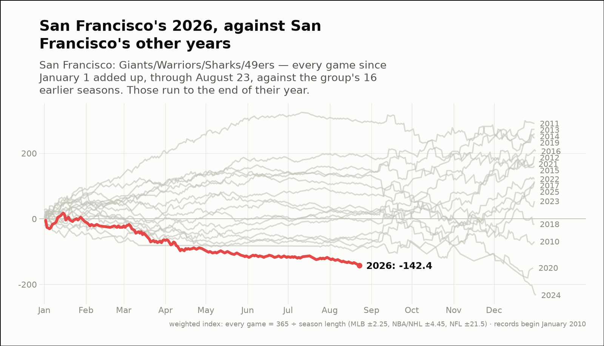
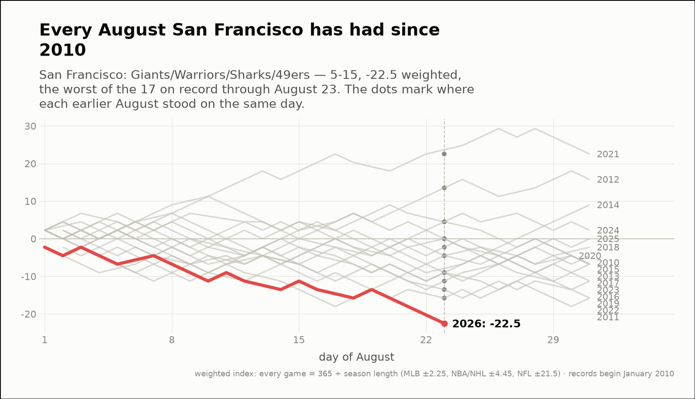
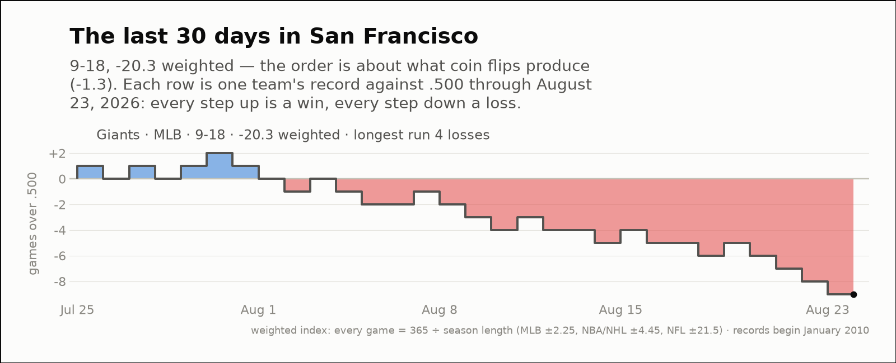

City of the day — San Francisco
San Francisco: Giants/Warriors/Sharks/49ers
- 2026 so far
- 92-133, -142.4 weighted over 225 games; longest run 6 straight wins
- Order of results
- about as clumped as coin flips (-0.7)
- Earlier seasons (full-year weighted)
- 2016 +206.2, 2017 +114.3, 2018 -16.4, 2019 +245.6, 2020 -149.8, 2021 +168.3, 2022 +121.2, 2023 +53.6, 2024 -232.8, 2025 +110.2
- Last 30 days
- 9-18, -20.3 weighted; longest run 4 straight losses
- Window opens
- July 25, 2026
- August 2026 through day 23
- 5-15, -22.5 weighted — the worst of the 11 on record
- Same August in earlier years (same stretch)
- 2016 -13.5, 2017 +4.5, 2018 -9.0, 2019 -9.0, 2020 -4.5, 2021 +22.5, 2022 +0.0, 2023 -9.0, 2024 +4.5, 2025 -11.3
| Team | Last 30 days | Weighted | Longest run |
|---|---|---|---|
| Giants | 9-18 | -20.3 | 4 straight losses |


